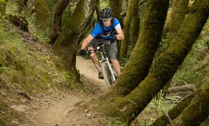

- home
- rockhopper
- bigfoot
- sasquatch
- townie
Bigfoot
Price $2568 CND

Bigfoot Fat Bike
The Bigfoot fat bikes are designed to provide outstanding flotation on soft surfaces and carry adventurous riders out into wild places not normally accessible to bicycles. With 4” and 4.8" tires, fat bikes can float through snow, sand, mud and other variable terrain, opening the door to mid-winter expeditions or epic beach rides. Lightweight, Norco-designed aluminum frames balance efficiency with comfort, and are sturdy, stable and surprisingly maneuverable. Now with a 24” option for little ones, and an electric assist BionX model, anyone can find adventure in places where bikes rarely go.